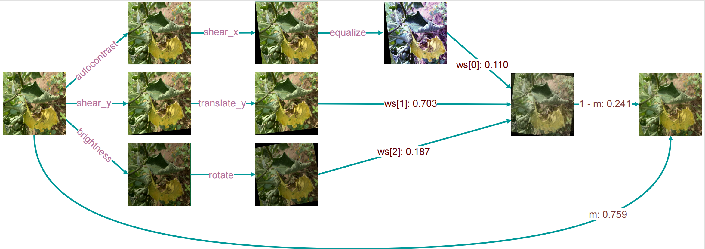
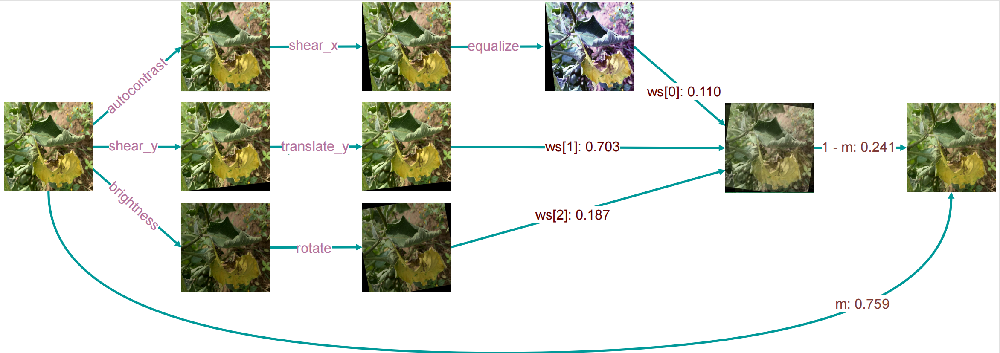

Project Abstract
Early in-field recognition of plant diseases contributes to lower crop losses and improved precision agriculture. This study presents the SLIF-Brinjal dataset, a field-acquired image collection containing 8,987 images representing seven diseases and healthy leaves, collected across multiple agro-climatic zones in Sri Lanka.

8,987
Total Images
8
Total Classes
94%+
Peak Accuracy
The Dataset
The dataset was built in stages, starting with 1,459 field images and later expanded using a modified AugMix method to balance classes while preserving ecological validity.
- Bacterial Blight
- Bacterial Leaf Spot
- Bacterial Wilt
- Cercospora Leaf Spot
- Littleleaf
- Mosaic Virus
- Powdery Mildew
- Healthy Leaves
Phased Expansion
| Phase | Description | Images |
|---|---|---|
| Raw | Direct Field Images | 1,459 |
| Phase I | Random Augmentation | 4,377 |
| Phase II | Modified AugMix | 8,987 |


Methodology
We evaluated the dataset using lightweight deep learning models. This approach establishes the dataset as suitable for training and assessing resource-efficient models in in-field settings.
 

Benchmark Results
Evaluation on four standard lightweight architectures using stratified five-fold cross-validation.
| Model | Accuracy | Precision | F1 Score |
|---|---|---|---|
| MobileNetV3-Small | 0.9417 | 0.9424 | 0.9421 |
| MobileNetV2 | 0.9389 | 0.9397 | 0.9395 |
| ShuffleNetV2 | 0.9288 | 0.9291 | 0.9292 |
| SqueezeNet | 0.8954 | 0.8960 | 0.8952 |
Model Interpretation (t-SNE)